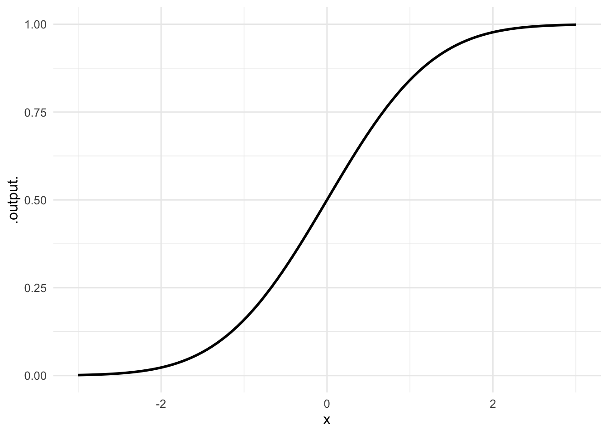
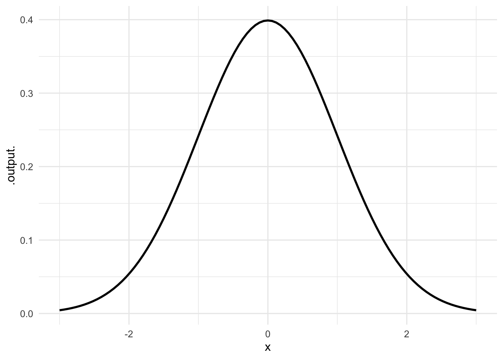
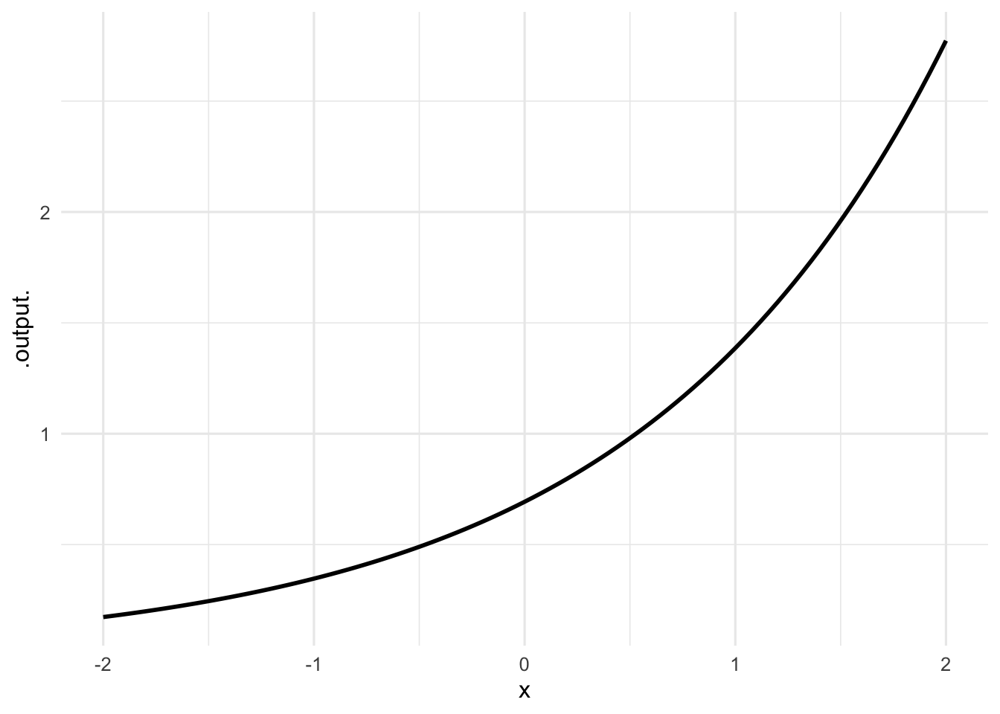
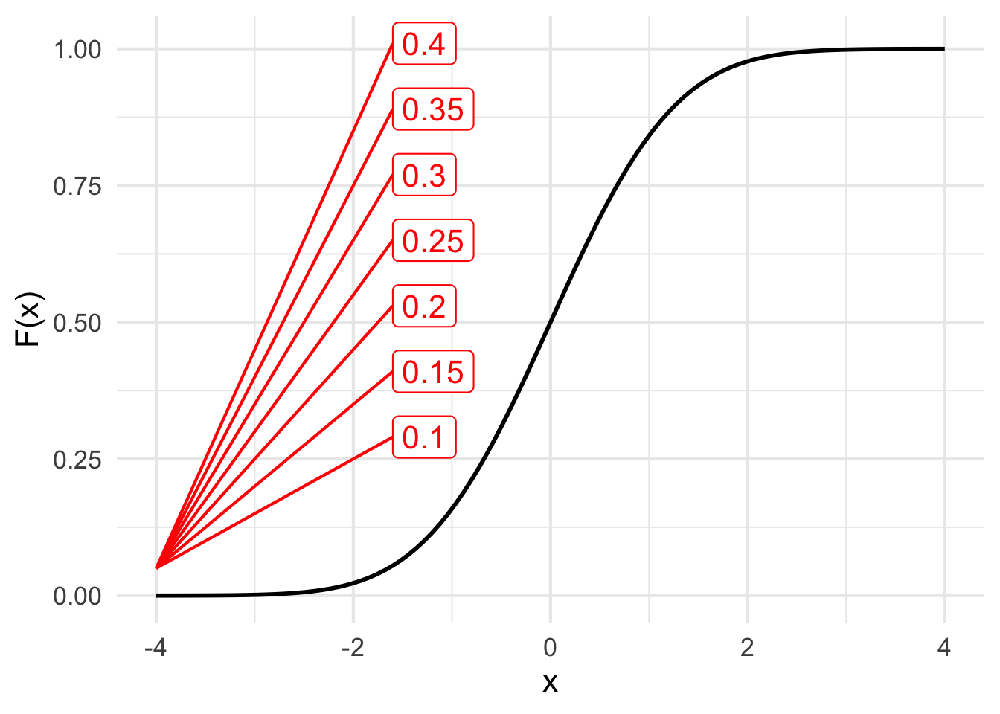
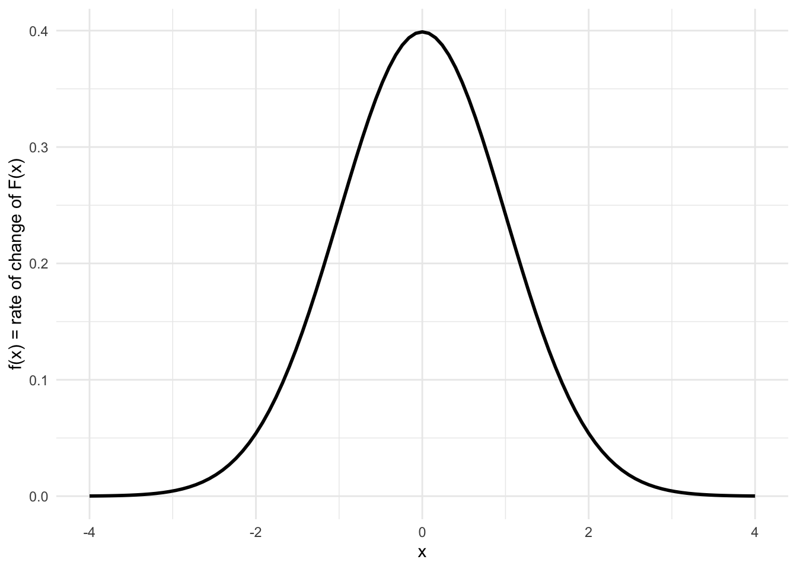
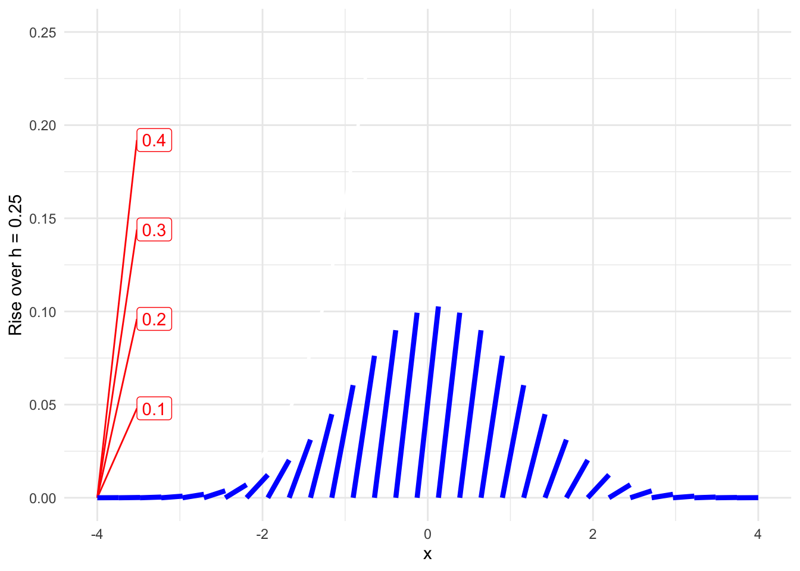

Quantitative Argumentation
Chapter 16 Drill Questions
NoteA. Units of Accumulation
As you know, different kinds of quantities have different dimensions. The operations of accumulating or differentiation change dimension. This provides an important clue about which operation is appropriate to change a quantity of one kind into another kind.
Both accumulation and differentiation involve a with-respect-to quantity. For instance, we might be interested in the amount of harvestable wood from a planted forest. The dimension of harvestable wood is L3: a volume. Trees grow over time: dimension T. Naturally, before reaching maturity a tree grows, increasing its volume. The everyday meaning of “grows” suggests a change with respect to time. Differentiating a tree’s volume with respect to time produces a volume “growth” rate with dimension L3 T-1, say, cubic meters per year.
Suppose we have a quantity Q with dimension [Q]. We also have another quantity P with dimension [P]. The derivative of Q with respect to P will have dimension [Q] [P]-1. In the growing-tree example, Q was volume of wood and P was time.
The accumulation of Q with respect to P works in a similar way. The result of the accumulation will have dimension [Q] [P]. In other words, accumulation involves multiplication by the with-respect-to quantity, while differentation corresponds to division by the with-respect-to-quantity.
In addition to relationship shaped by accumulation or differentiation, there is a simpler kind of relationship: proportionality. For example, the height (dimension L) of a tree is proportional to the girth (dimension L).
In the following questions, you are to figure out whether the relationship between two given quantities is accumulation, differentiation, or proportionality.
Remember that we are using L, M, and T as the dimension of length, mass, and time, respectively. For our purposes we have extended this with two dimensions not included in science courses.
- C is the [person], following the Latin capita.
- W is the [worth] or value. We typically measure worth using units of currency, e.g. USD, Euros, etc. But it’s more meaningful, if long periods of time are involved, to measure worth as as an index, say “constant dollars” which refers to the dollar value of something at a particular moment in time, adjusting earlier or later values according to account for inflation.
Exercise 1 Speed has dimension L T-1 whereas distance has dimension L. What is the relationship between speed and distance?
Exercise 2 Human staffing for a project or enterprise has dimension C (that is, [capita]). Human effort expended in completing a project has dimension C T, reflecting that a person needs time to accomplish anything.
What is the relationship between staffing and human effort?
Exercise 3 Consider a store selling goods to consumers. One way to describe the store’s activity is a sales rate, W T-1, say, dollars per month. At the end of the year, accountants tally up the stores total sales for the year, with dimension W. What is the relationship between sales rate and total sales?
Exercise 4 Typically, people and companies have an amount of “cash on hand,” for example the amount of money in bank accounts which can be drawn on without advance notice. (Such accounts are said to be “completely liquid.” In contrast, an asset like a house is not so liquid, since it takes time and effort to sell it.) The dimension of cash on hand is W.
Careful people and companies also keep track of their cash flow (which can change over time). Cash flow has dimension W T-1.
What is the relationship between cash flow and cash-on-hand?
It can be worthwhile to combine cash flow and cash-on-hand for some purposes. Naturally, they cannot be added or subtracted; they have different dimensions. But they can be multiplied or divided.
Suppose a person or company has negative cash flow, that is, their expenses exceed their income. Such a situation cannot be sustained indefinitely. We’d like to figure out how long the situation can last before running out of money (e.g., bankruptsy). Which of these calculations is most relevant to figuring out how long the situation can last?
Exercise 5 Most people have a tangible sense of the distinction between velocity and acceleration. This distinction is illuminated by the different dimensions of the quantites, for example, miles per hour for velocity and, for acceleration, meters per second-squared.
Translate the units given in the previous paragraph into dimensions for velocity and acceleration. Then say which of these is true of the relationship between acceleration and velocity.
Exercise 6 Newton’s Second Law famously related acceleration to force and mass. What’s the relationship between force and acceleration?
Exercise 7 Units for force include pounds (lbs.) and Newtons (N). The unit kilogram (kg) is actually a unit of mass, not force. There are many units for energy, including btu, barrels of oil, kilowatt hours (kWh), and Newton-meters. Based on this information, what’s the relationship between force and energy?
Tip
It’s easier to see the relationship if you picture yourself carrying a 10 pound bar bell up a flight of stairs. If you drop the bar bell from the top of the stairs, it will accelerate and, when it hits the floor, dissipate its energy in the form of noise (and a dented floor). A pound is a unit of force, a “flight of stairs” is a unit of vertical distance. “Carrying up” is equivalent to multiplying the vertical distance times the amount of force. Instead of multiplying, we could say “accumulating.”
Exercise 8 The name “horsepower” strongly suggests that it is a unit of power. James Watt’s definition of 1 horsepower was made experimentally. A horse was harnessed to a bar to pull against a measured amount of force. (The force measurement was made with a spring scale.) The horse walked around a circle, with the bar connected to an axel in the center of the circle. Watt measured the total distance traveled by the horse in one hour of time.
Which of these calculations of “horsepower” makes sense if the unit is one of power? Remember that the dimension of force is [acceleration] \(\times\) [mass] or, L M T-2. The dimension of power is L2 M T-3.
Exercise 9 Energy has dimension L2 M T-2. Power has dimension L^2 M T-3. What is the relationship between energy and power?
Tip
Energy is force times distance. Force is mass time acceleration. Acceleration is the derivative of velocity with respect to time. Velocity has dimension L/T.
You can work out the dimension of each of the multiplication and the derivative to construct the dimension of energy.
Power is the flow of energy, that is, the amount of energy delivered per unit time.
Notice that power involves a quantity denominated in “cubic-seconds.” If you can get your head around a cubic-second, you have really come a long way!
Exercise 10 An AI reported the following:
As of the third quarter of 2025, the U.S. Gross National Product (GNP) reached an all-time high of approximately $31.12 trillion, reported by the BEA and Federal Reserve Economic Data (FRED). This represents a significant increase from the 2023 annual total of $26.945 trillion. GNP measures the total value of goods and services produced by U.S. residents and businesses, regardless of location.
Accepting the numbers, is something wrong about the AI’s description of GNP?
Still in draft
NoteB. Core modeling functions
A partial motivation for the choice of our core modeling functions is that, often, a core modeling function has a derivative or anti-derivative that is another core modeling function. With enough practice, finding the derivative or anti-derivative of core modeling functions becomes second nature. This greatly facilitates modeling, since if you know either the derivative or the anti-derivative of the function you are ultimately interest in, you can easy know the shape of that function of interest.
We are not planning for you to commit to heart more than a very few of these pairs. Instead, these drill questions in this section will give you a quick introduction.
Each of the following questions plots out two functions, side-by-side. At least one of the functions come from the core modeling collection. As well, the functions will always be a derivative/anti-derivative pair. Your job is to identify which is the anti-derivative function and say whether both of the functions have shapes from core modeling collection.
Exercise 11


- Which of the two functions has the shape of a core modeling function, left, right, or both?
- Which core modeling function(s) are shown?
Exercise 12

- Which of the two functions has the shape of a core modeling function, left, right, or both?
Tip
Sorry. Remember that this core modeling function has output 1 when the input is 0.
- Which core modeling function is shown?
Note: This is the only core modeling function whose derivative has the same shape as the function itself. Or, said another way, this is the only core modeling function whose anti-derivative has the same shape as the function itself.
NoteB. Slopes and anti-derivativess
Exercise 13 We’re working with pairs of functions that are closely related to one another:
- \(F(x)\) is the anti-derivative of \(f(x)\)
- \(f(x)\) is the derivative of \(F(x)\)
Our goal is to show you that there is enough information in \(f(x)\) to reconstitute \(F(x) + C\). The \(+C\) means that the reconstitued function might be shifted up or down.
To develop your intuition, we’ve invented a new way of plotting \(f(x)\). Figure 1 shows \(F(x)\) and \(f(x)\) in the usual format: function output versus input.
The value of \(f(x)\) at any input value is the same as the slope of \(F(x)\) at that input value. To help you see this, we have annotated the graph with lines of different slopes.
f <- dnorm
F <- pnorm
dom <- domain(x = -4:4)
slice_plot(F(x) ~ x, dom) |>
LSTbook::add_slope_rose(keepers = "pos", y = 0.05, x = -4,
nice_slopes = c(0.1, 0.15, 0.2, 0.25, 0.3, 0.35,0.4),
scale = 0.3) |>
gf_labs(y = "F(x)") |>
gf_theme(theme_minimal(base_size = 16))
slice_plot(f(x) ~ x, dom) |>
gf_labs(y = "f(x) = rate of change of F(x)") |>
gf_theme(theme_minimal())
Pts <- Znotes::segmentize(F(x) ~ x, h=0.25, dom, npts=1) |>
dplyr::mutate(top = cumsum(ymax - ymin), bottom=top - (ymax-ymin))
slice_plot(F(x) ~ x, dom, color = "white") |>
gf_lims(y=c(0, 0.25), x = c(-4,4)) |>
gf_labs(y="Rise over h = 0.25") |>
LSTbook::add_slope_rose(keepers = "pos", y = 0, x = -4, nice_slopes = c(0.1, 0.2, 0.3, 0.4), scale = .06) |>
gf_segment(ymin + ymax ~ xmin + xmax, data = Pts,
color="blue", linewidth=1.5) |>
gf_theme(theme_minimal())


- In the graph of \(F(x)\), locate a specific input—we’ll call it \(x_0\)—where the slope of \(F(x)\) is approximately 0.40. Which of these is closest to that input?
- Now look at the graph of \(f(x)\). An any input value \(x_0\), the output \(f(x_0)\) is the slope of \(F(x)\). Look at the value of \(f(x_0)\), that is, the value of \(f()\) at the input you selected in question (1). The output value \(f(x_0)\) should match the slope of \(F(x)\) at \(x = x_0\).
- Focus now on panel (c) of Figure 1. This panel also shows \(f(x)\), but in a new way. In panel (C), the output of \(f(x)\) is shown as the slope of a sloping line segment. (In constrast, in panel (B) the output of \(f(x)\) is shown on the vertical axis.) We’ve annotated the graph with slopes, but it’s easier to do a little calculation to find the slope of any of the segments in panel (C).
Slope is rise over run. The segments in panel (C) are drawn with a run of 0.25. That means you can read off the slope of a segment by measuring the height (“rise”) of the segment and dividing it by 0.25.
What is the slope of the center segment—the tallest one—in panel (C)?
- Judging from the heights of the segments in panel (C), locate the left-most segment that has a slope of 0.1. (Remember that the “run” is 0.25, so the height of the correct segment will be such that height/0.25 = 0.1.) What is the value of \(x\) where this segment is located?
- Going back to panel (B), read off the value of \(f(x)\) at the input you identified in question (4). What is this value?
Connecting the segments in panel (C), so the left end of one segment matches the right end of the neighbor on the left side, reconstitutes the original function \(F(x)\), using only the information that’s contained in \(f(x)\).
Show some graphs of f(x) as well as slope segments. Are they for the same function?
Show some graphs of F(x) as well as slope segments. Are they for the same function?
Show some slope segments and ask the student to reconstitute \(F()\) and say which core modeling function it is.
NoteKey vocabulary
Two of the following are valid descriptions of accumulation. The other three are not. Mark both of the VALID descriptions.
devoirs3::devoirs_selection(
label = "accumulation-15-two",
question = "Two of the following are valid descriptions of accumulation. The other three are not. Mark both of the VALID descriptions.",
answers = accumulation_15_two_choices,
multiple = TRUE
)()Two of the following are valid descriptions of anti-differentiation. The other three are not. Mark both of the VALID descriptions.
devoirs3::devoirs_selection(
label = "anti-differentiation-15-two",
question = "Two of the following are valid descriptions of anti-differentiation. The other three are not. Mark both of the VALID descriptions.",
answers = anti_differentiation_15_two_choices,
multiple = TRUE
)()Two of the following are valid descriptions of incidence. The other three are not. Mark both of the VALID descriptions.
devoirs3::devoirs_selection(
label = "incidence-15-two",
question = "Two of the following are valid descriptions of incidence. The other three are not. Mark both of the VALID descriptions.",
answers = incidence_15_two_choices,
multiple = TRUE
)()Two of the following are valid descriptions of integration. The other three are not. Mark both of the VALID descriptions.
devoirs3::devoirs_selection(
label = "integration-15-two",
question = "Two of the following are valid descriptions of integration. The other three are not. Mark both of the VALID descriptions.",
answers = integration_15_two_choices,
multiple = TRUE
)()